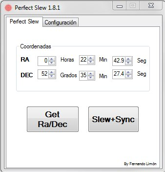
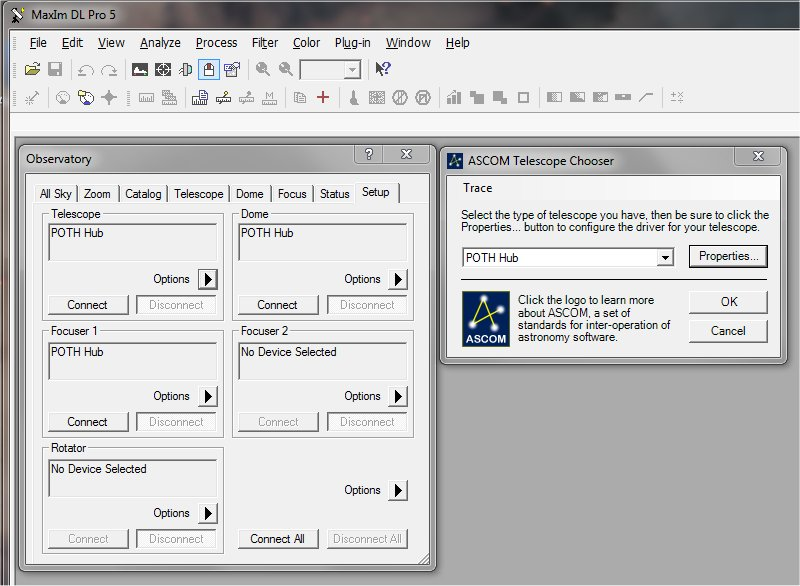
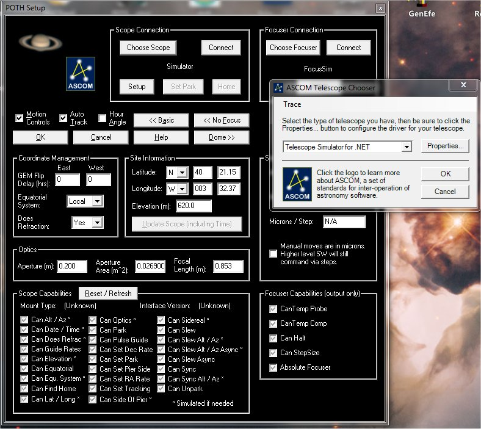
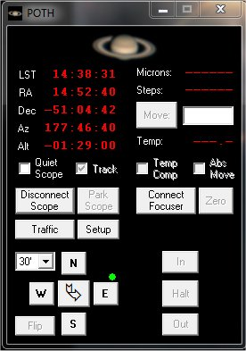
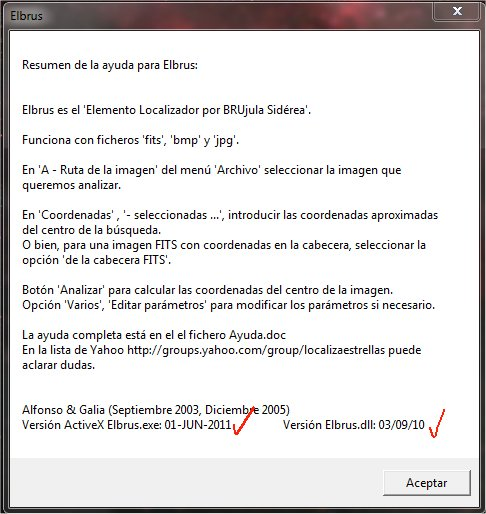
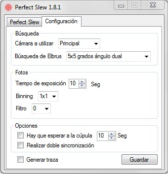

|
Perfect Slew |
||
|
|
Versión 2.0 |
|
Con la experiencia adquirida con el programa Elbrus_sync, y viendo que no todos utilizan CCD Commander en sus sesiones, he preparado un programa que permita disfrutar de las prestaciones de Elbrus y conseguir unos desplazamientos y posicionamientos de la montura de gran precisión.

Previo a utilizar Perfect_slew debemos asegurarnos que tenemos MaximDL y POTH perfectamente configurados y operativos. MaximDL debe tener configurada la cámara y estar, como mínimo, en disposición de conectarse a ella y poder realizar tomas. MaximDL también debe tener configurado el telescopio, que debe ser necesariamente ASCOM POTH, pues es necesario que en las tomas que realicemos se incluyan en las cabeceras FIT las coordenadas a donde apuntaba en ese momento el telescopio. Y por último, debe estar configurado POTH para conectarse a la montura y operar sobre ella.



Si quiere familiarizarse con el programa sin tener que poner el observatorio en marcha, recomiendo configurar POTH para utilizar unos de los simuladores de monturas que proporciona ASCOM. De igual manera se puede configurar MaximDL para que utilice como cámara el simulador de ASCOM. Lo más que va a pasar es que Elbrus no será capaz de resolver la foto, pero por lo demás, podremos jugar y verificar que todo nuestro software funciona sin problemas.
Respecto a Elbrus, además de estar configurado para resolver las fotos que se le proporcionen, es muy importante que esté actualizado. Desgraciadamente hay usuarios de Elbrus que utilizaban versiones tan antiguas que no disponen de interfaz ActiveX, por lo que Perfect_slew no puede comunicar con él por este medio.
Abriendo Elbrus en modo interactivo y pulsando el botón de ayuda obtendréis la información necesaria sobre la versión de Elbrus y su DLL que estáis utilizando. Aparecerá una ventana como esta::

He intentado que el programa tenga bajo control aquellas incidencias habituales, pero en modo alguno es posible controlar "imprevistos" no gestionables ni razonablemente previsibles. No es normal que se desconecte una cámara o un telescopio que hace un instante estaba operativo. En estos casos se mostrará el correspondiente mensaje de error ... como en casi todos los programas.
La inmensa mayoría de las monturas permiten parar y arrancar el seguimiento (tracking) desde el interfaz de programación, en cuyo caso Perfect_slew operará sin problemas y de forma automática. En el caso de monturas que no permiten parar o arrancar por software el seguimiento, el programa mostrará una ventana pidiendo se realice la operación de forma manual.
La primera vez que se utilice este programa es muy importante que lo primero que se haga sea configurarlo. Además de tener bien configurado Elbrus, que entre otras cosas debe estar configurado para la cámara y óptica que se vaya a utilizar y debe estar preparado para sincronizar automáticamente el telescopio una vez resuelva la foto.
Al iniciar el programa, en la pestaña principal podréis ver las coordenadas Ra/Dec a las que apunta el telescopio en ese momento. Para comunicarnos con la montura me he basado, como ya he comentado, en POTH, un HUB incluido en la plataforma ASCOM.
En el caso de que se quiera realizar un desplazamiento a unas coordenadas concretas, es posible modificar éstas directamente en el diálogo de coordenadas. Siempre existirá la opción de volver a leer las coordenadas de la montura con el botón Get Ra/Dec.
Las coordenadas RA y DEC que figuran en el diálogo se ponen en color rojo si no coinciden con las que indica la montura, admitiendo un error de 0,5 segundos de arco. En ese caso, cuando pulsemos Slew+Sync estaremos ordenando a la montura que se desplace hasta las coordenadas que figuran en el diálogo y luego realice la sincronización mediante Elbrus. En el caso de coincidir no realizará el desplazamiento inicial e irá directamente a realizar la sincronización.
El botón Slew+Sync desencadena una serie de acciones: un desplazamiento a las coordenadas que figuran en el diálogo de coordenadas si fuese necesario. Una vez establecido, se realiza una foto con la cámara según lo indicado en la pestaña de configuración, y se ejecuta Elbrus para que resuelva la toma y resincronice la montura. Finalmente se realiza un nuevo desplazamiento, al final del cual tendremos nuestra montura perfectamente centrada en las coordenadas indicadas. Mientras se realizan todas estas operaciones el botón Slew+Sync permanecerá de color rojo.

En la pestaña de Configuración indicaremos la cámara con la que se realizarán las tomas, el campo de búsqueda que utilizará Elbrus, tiempo de exposición, binning a utilizar, y número de filtro en caso de tenerlo. El proceso de configuración será lo primero que se realice cuando instalemos el programa.
Existe un botón para activar la generación de trazas para depuración de posibles problemas. En el caso de activarse, las trazas se almacenan en el fichero Perfect_slew.log ubicado en el mismo directorio donde esté instalado el programa. Cada vez que se inicia Perfect_slew se reinicia el fichero de trazas. Si al usar Perfect_slew tenéis algún problema, os ruego activéis la generación de trazas y me hagáis llegar el fichero de log. Si tenéis problemas, necesito me ayudéis a ayudaros proporcionando el máximo de información disponible.
Las fotos se realizan a través de MaximDL, que deberá tener conectadas las cámaras y el telescopio, para que en las fotos incluya en las cabeceras FIT las coordenadas a donde supuestamente apuntaba.
Opcionalmente se puede indicar un tiempo destinado a esperar el posicionamiento de la cúpula antes de realizar la toma, y para algunas monturas algo "despistadas" podemos solicitar realizar un doble proceso de sincronización.
Si arranca directamente Perfect_slew verá que él se carga de iniciar todos los programas con los que interactúa. Pero al cerrar Perfect_slew éstos también se cerrarán. En cualquier caso personalmente recomiendo que Perfect_slew se encuentre ya todos los programas operativos y conectados a sus respectivos dispositivos.
Como veis, es muy similar a Elbrus_sync en cuanto al funcionamiento, pero no dependemos de CCD Commander.
Perfect_slew lo podéis descargar de aquí. No necesita instalación y se puede ubicar en cualquier directorio. Recomendable instalarlo en el mismo donde tengamos instalado Elbrus.
Este programa ha sido compilado para funcionar con Microsoft .NET Framework 4.5, por lo que deberá verificar que dispone de esta versión o superior, y en su defecto, puede descargarlo e instalarlo desde Microsoft.
Espero que les guste y sea de utilidad.